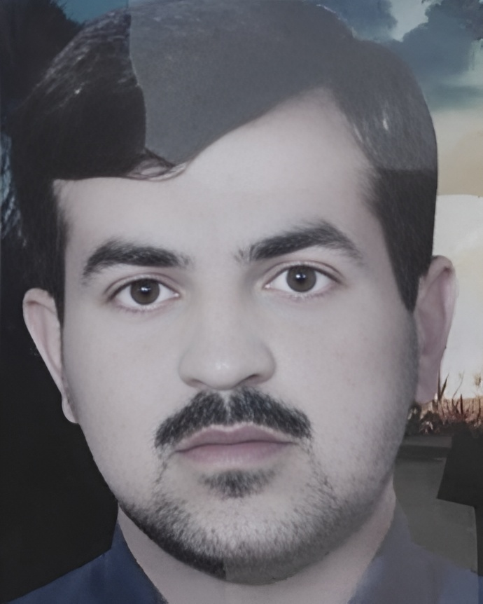

احمد چراغیان

شهرک چمران (جراحی) ـ ماهشهر
ساعات، دقایق و ثانیههایی که از نبودن احمد چراغیان گذشت
احمد چراغیان، متولد ۱۳۵۸ در جایزانِ امیدیه خوزستان، کارمند بخش بهرهبرداری پتروشیمی تندگویان ماهشهر بود.
او متأهل و پدر سه دختر بود.
در جریان اعتراضات آبان ۱۳۹۸، روز دوشنبه ۲۷ آبان، در شهرک چمران (جراحی) ماهشهر، نیروهای سپاه پاسداران با دوشکا به سوی معترضان شلیک کردند.
احمد چراغیان و سالم سنجری (سنجریان) و شمار دیگری از معترضان در این واقعه جان باختند.
```